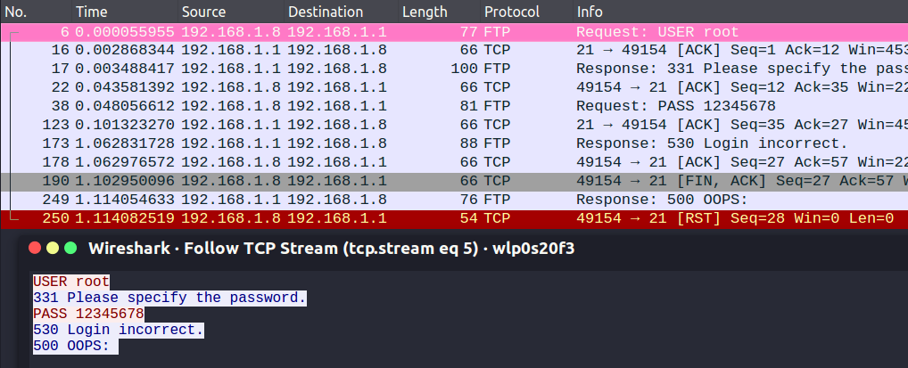

引言:
当你得到一把武器,了解它的原理后,你还应该熟悉它,让它发挥出更强大的力量
正文内容
承接上一篇”nmap原理图解“，该文用大量的例子讲解说明nmap的基本原理，也浅略地尝试了使用，并且附上了相应的命令解析。这样做恐怕也并不足够，相信看完了对于实际的应用，仍然有点措手不及。缺乏相应场景的使用，是欠缺实践意义的。原理是工具构建的本质，也是每个工具自身的优缺点的出发点，但工具的好坏，最终依然要落实到实践上来。
本文将给出nmap相应的使用场景，以及对于功能增强的引擎有一个基本的介绍。
常用命令
存活主机扫描
使用 conn()扫描 (无需root权限)
1
2
3
4
5~ ❯ nmap 192.168.1.0/26 -sn -n | sed -n '1,$N;s/\n/\t/gp'
Starting Nmap 7.01 ( https://nmap.org ) at 2022-01-04 13:56 HKT
Nmap scan report for 192.168.1.1 Host is up (0.11s latency).
Nmap scan report for 192.168.1.7 Host is up (0.24s latency).
Nmap scan report for 192.168.1.8 Host is up (0.000097s latency).使用 ping 扫描 (不需root权限)
1
2
3
4
5
6
7~ ❯ nmap 192.168.1.0/26 -sn -n -sP --disable-arp-ping | sed -n '1,$N;s/\n/\t/gp'
Starting Nmap 7.01 ( https://nmap.org ) at 2022-01-04 13:59 HKT
Nmap scan report for 192.168.1.1 Host is up (0.0072s latency).
Nmap scan report for 192.168.1.3 Host is up (0.25s latency).
Nmap scan report for 192.168.1.7 Host is up (0.25s latency).
Nmap scan report for 192.168.1.8 Host is up (0.000062s latency).
Nmap scan report for 192.168.1.10 Host is up (0.11s latency).使用ARP ping (需要root权限, 能显示mac地址)
1
2
3
4
5~ ❯ sudo nmap 192.168.1.0/26 -sn -n -PR | sed -n '1,$N;N;s/\n/\t/gp'
Starting Nmap 7.01 ( https://nmap.org ) at 2022-01-04 13:17 HKT Nmap scan report for 192.168.1.1
Host is up (0.010s latency). MAC Address: 48:5A:AB:AB:AB:AB (Unknown) Nmap scan report for 192.168.1.7
Host is up (0.060s latency). MAC Address: DA:B2:AB:AB:AB:AB (Unknown) Nmap scan report for 192.168.1.10
Host is up (0.041s latency). MAC Address: A4:42:AB:AB:AB:AB (Unknown) Nmap scan report for 192.168.1.8
主机端口扫描
使用TCP SYN 扫描20-25，80端口，不扫描8080
1
2
3
4
5
6
7
8
9
10
11
12
13
14
15~ ❯ sudo nmap -p20-25,80 --exclude 8080 192.168.1.1 -sS
Starting Nmap 7.01 ( https://nmap.org ) at 2022-01-04 14:07 HKT
Nmap scan report for 192.168.1.1
Host is up (0.0086s latency).
PORT STATE SERVICE
20/tcp filtered ftp-data
21/tcp open ftp
22/tcp closed ssh
23/tcp closed telnet
24/tcp filtered priv-mail
25/tcp filtered smtp
80/tcp open http
MAC Address: 48:5A:AB:AB:AB:AB (Unknown)
Nmap done: 1 IP address (1 host up) scanned in 1.58 secondstop100 端口快速扫描
1
2
3
4
5
6
7
8
9
10
11
12
13
14
15
16
17~ ❯ nmap -n --disable-arp-ping -T4 -F 192.168.1.1
Starting Nmap 7.01 ( https://nmap.org ) at 2022-01-04 14:26 HKT
Nmap scan report for 192.168.1.1
Host is up (0.011s latency).
Not shown: 91 filtered ports
PORT STATE SERVICE
21/tcp open ftp
22/tcp closed ssh
23/tcp closed telnet
53/tcp open domain
80/tcp open http
443/tcp closed https
445/tcp closed microsoft-ds
8080/tcp open http-proxy
32768/tcp open filenet-tms
Nmap done: 1 IP address (1 host up) scanned in 1.84 seconds
主机系统扫描分析
- 系统信息查看
1
2
3
4
5
6
7
8
9
10
11
12
13
14
15
16
17
18
19
20
21
22
23~ ❯ sudo nmap -O -sS -n --disable-arp-ping 192.168.1.1
Starting Nmap 7.01 ( https://nmap.org ) at 2022-01-04 14:09 HKT
Nmap scan report for 192.168.1.1
Host is up (0.014s latency).
Not shown: 990 filtered ports
PORT STATE SERVICE
21/tcp open ftp
22/tcp closed ssh
23/tcp closed telnet
53/tcp open domain
80/tcp open http
443/tcp closed https
445/tcp closed microsoft-ds
8080/tcp open http-proxy
32768/tcp open filenet-tms
32769/tcp closed filenet-rpc
MAC Address: 48:5A:EA:AB:AB:AB (Unknown)
Aggressive OS guesses: Linux 3.10 - 3.19 (95%), Linux 3.11 - 4.1 (94%), Android 4.1.1 (91%), Linux 3.2 - 4.0 (91%), DD-WRT v24 (Linux 3.10) (90%), Android 4.2.2 (Linux 3.4) (90%), HP P2000 G3 NAS device (90%), Asus RT-AC66U WAP (89%), Linux 2.6.32 - 3.13 (89%), Linux 3.2 - 3.8 (89%)
No exact OS matches for host (test conditions non-ideal).
Network Distance: 1 hop
OS detection performed. Please report any incorrect results at https://nmap.org/submit/ .
Nmap done: 1 IP address (1 host up) scanned in 26.91 seconds
主机服务信息分析
- 启用服务版本
1
2
3
4
5
6
7
8
9
10
11~ ❯ sudo nmap -sV -p21 -n --disable-arp-ping 192.168.1.1
Starting Nmap 7.01 ( https://nmap.org ) at 2022-01-04 14:17 HKT
Nmap scan report for 192.168.1.1
Host is up (0.0052s latency).
PORT STATE SERVICE VERSION
21/tcp open ftp vsftpd 3.0.4
MAC Address: 48:5A:AB:AB:AB:AB (Unknown)
Service Info: OS: Unix
Service detection performed. Please report any incorrect results at https://nmap.org/submit/ .
Nmap done: 1 IP address (1 host up) scanned in 0.91 seconds
综合信息查看
- 查看主机详细信息
1
2
3
4
5
6
7
8
9
10
11
12
13
14
15
16
17
18
19
20
21
22
23
24
25
26
27
28
29
30
31
32
33
34
35
36
37
38
39
40
41
42
43
44
45
46
47
48
49
50
51
52
53
54
55
56
57
58
59
60
61
62
63
64
65
66
67
68
69~ ❯ nmap -T4 -A -v 192.168.1.1
Starting Nmap 7.01 ( https://nmap.org ) at 2022-01-04 14:20 HKT
NSE: Loaded 132 scripts for scanning.
NSE: Script Pre-scanning.
Initiating NSE at 14:20
Completed NSE at 14:20, 0.00s elapsed
Initiating NSE at 14:20
Completed NSE at 14:20, 0.00s elapsed
Initiating Ping Scan at 14:20
Scanning 192.168.1.1 [2 ports]
Completed Ping Scan at 14:20, 0.00s elapsed (1 total hosts)
Initiating Parallel DNS resolution of 1 host. at 14:20
Completed Parallel DNS resolution of 1 host. at 14:20, 0.01s elapsed
Initiating Connect Scan at 14:20
Scanning 192.168.1.1 [1000 ports]
Discovered open port 80/tcp on 192.168.1.1
Discovered open port 53/tcp on 192.168.1.1
Discovered open port 8080/tcp on 192.168.1.1
Discovered open port 21/tcp on 192.168.1.1
Completed Connect Scan at 14:20, 6.64s elapsed (1000 total ports)
Initiating Service scan at 14:20
Scanning 4 services on 192.168.1.1
Service scan Timing: About 75.00% done; ETC: 14:23 (0:00:34 remaining)
Completed Service scan at 14:22, 121.25s elapsed (4 services on 1 host)
NSE: Script scanning 192.168.1.1.
Initiating NSE at 14:22
Completed NSE at 14:23, 9.01s elapsed
Initiating NSE at 14:23
Completed NSE at 14:23, 0.00s elapsed
Nmap scan report for 192.168.1.1
Host is up (0.010s latency).
Not shown: 992 filtered ports
PORT STATE SERVICE VERSION
21/tcp open ftp vsftpd 3.0.4
22/tcp closed ssh
23/tcp closed telnet
53/tcp open domain?
80/tcp open http
| http-methods:
|_ Supported Methods: GET HEAD POST OPTIONS
|_http-title: \xE4\xB8\xAD\xE5\x9B\xBD\xE7\x94\xB5\xE4\xBF\xA1\xE6\x99\xBA\xE8\x83\xBD\xE7\xBD\x91\xE5\x85\xB3
443/tcp closed https
445/tcp closed microsoft-ds
8080/tcp open http-proxy
|_http-favicon: Unknown favicon MD5: DED0E55335EE0D33AC17E2AC33DA76FD
| http-methods:
|_ Supported Methods: GET HEAD
|_http-open-proxy: Proxy might be redirecting requests
|_http-title: Site doesn't have a title (text/html; charset=utf-8).
2 services unrecognized despite returning data. If you know the service/version, please submit the following fingerprints at https://nmap.org/cgi-bin/submit.cgi?new-service :
==============NEXT SERVICE FINGERPRINT (SUBMIT INDIVIDUALLY)==============
SF-Port80-TCP:V=7.01%I=7%D=1/4%Time=61D3E748%P=x86_64-pc-linux-gnu%r(GetRe
SF:quest,433,"HTTP/1\.0\x20200\x20OK\r\nConnection:\x20close\r\nETag:\x20\
..
==============NEXT SERVICE FINGERPRINT (SUBMIT INDIVIDUALLY)==============
SF-Port8080-TCP:V=7.01%I=7%D=1/4%Time=61D3E748%P=x86_64-pc-linux-gnu%r(Get
SF:Request,9D5,"HTTP/1\.1\x20200\x20OK\r\nDate:\x20Tue,\x2004\x20Jan\x2020
...
Service Info: OS: Unix
NSE: Script Post-scanning.
Initiating NSE at 14:23
Completed NSE at 14:23, 0.00s elapsed
Initiating NSE at 14:23
Completed NSE at 14:23, 0.00s elapsed
Read data files from: /usr/bin/../share/nmap
Service detection performed. Please report any incorrect results at https://nmap.org/submit/ .
Nmap done: 1 IP address (1 host up) scanned in 137.37 seconds
引擎
基本介绍
nmap的脚本引擎被称为
NSE(nmap scripting engine),是namp二次开发的一个延伸，其使用的语言是Lua，相关文件的后续为.nse。- 可以通过locate查询其相关的位置：
1
2
3
4
5
6
7
8
9
10
11~ took 2s ❯ sudo locate .nse
/usr/share/nmap/scripts/acarsd-info.nse
/usr/share/nmap/scripts/address-info.nse
/usr/share/nmap/scripts/afp-brute.nse
/usr/share/nmap/scripts/afp-ls.nse
/usr/share/nmap/scripts/banner.nse
/usr/share/nmap/scripts/bitcoinrpc-info.nse
/usr/share/nmap/scripts/bjnp-discover.nse
/usr/share/nmap/scripts/broadcast-ataoe-discover.nse
/usr/share/nmap/scripts/broadcast-avahi-dos.nse
...
- 可以通过locate查询其相关的位置：
脚本的类别:
- auth：这个分类中包含的都是负责处理鉴权证书的脚本（绕开权限）
- broadcast：这个分类中包含的都是在局域网内嗅探更多服务开启状况，如DNS、SQL Server等服务
- brute：这些都是针对常见的应用，如HTTP、SSH、FTP等破解密码的脚本
- default：这是使用-sC或-A参数扫描时候的脚本，提供基础的扫描能力
- discovery：对网络进行更多的信息搜集，如SMB枚举，SNMP查询等
- dos：用来发起拒绝服务GJ的脚本
- exploit：用来完成对目标系统安全漏洞的脚本
- external：针对第三方服务的脚本
- fuzzer：进行模糊测试的脚本，发送异常的包到目标主机，探测出潜在的漏洞
- intrusive：可能会引起目标系统崩溃或对目标网络造成极大负担的脚本，这类脚本很容易被防火墙或IPS发现
- malware：用来检测恶意软件的脚本
- safe：在任何情况下都是安全无害的脚本
- version：负责增强服务于版本扫描功能的脚本
- vuln：负责检查目标主机是否有常见漏洞
脚本的类型：
- NSE 支持四种类型的脚本，它们的区别在于它们采用的目标类型和运行它们的扫描阶段。单个脚本可能支持多种类型的操作。
- Prerule scripts
- 这些脚本在 Nmap 的任何扫描阶段之前运行，因此 Nmap 尚未收集有关其目标的任何信息。
- Host scripts
- 此阶段的脚本在Nmap 对目标主机进行主机发现、端口扫描、版本检测和操作系统检测后，在Nmap 的正常扫描过程中运行。
- Service scripts
- 这些脚本针对在目标主机上侦听的特定服务运行。
- Postrule scripts
- 这些脚本在 Nmap 扫描其所有目标后运行。
使用方式
1
2
3
4
5
6
7
8
9
10$ nmap -sC target #load default scripts
OR
$ nmap --script filename|category|directory|expression,... target
# example
$ nmap -sC scanme.nmap.org
OR
$ nmap --script=default scanme.nmap.org
OR
$ nmap --script default scanme.nmap.org
常见使用
加载所有 default, safe 类别的脚本
1
2
3
4
5
6
7
8
9
10
11
12
13
14
15
16
17~ ❯ sudo nmap --script default,safe
Starting Nmap 7.01 ( https://nmap.org ) at 2022-01-04 15:42 HKT
Pre-scan script results:
|_broadcast-dhcp-discover:
| broadcast-listener:
| udp
| DHCP
| srv ip cli ip mask gw dns vendor
|_ 192.168.1.1 192.168.1.15 255.255.255.0 192.168.1.1 192.168.1.1 -
|_broadcast-pppoe-discover: ERROR: Script execution failed (use -d to debug)
|_eap-info: please specify an interface with -e
| targets-asn:
|_ targets-asn.asn is a mandatory parameter
Post-scan script results:
|_reverse-index: false
WARNING: No targets were specified, so 0 hosts scanned.
Nmap done: 0 IP addresses (0 hosts up) scanned in 42.68 seconds使用通配符，执行ftp-*相关的脚本
1
2~ ❯ nmap -p 21 --script ftp-* 192.168.110.222
...尝试暴力破解 port 21 端口的ftp服务
1
2
3
4
5
6
7
8
9
10~ ❯ nmap -p 21 --script ftp-brute 192.168.1.1
Starting Nmap 7.01 ( https://nmap.org ) at 2022-01-04 15:49 HKT
Nmap scan report for 192.168.1.1
Host is up (0.0022s latency).
PORT STATE SERVICE
21/tcp open ftp
| ftp-brute:
| Accounts: No valid accounts found
|_ Statistics: Performed 5282 guesses in 601 seconds, average tps: 8
对本地网络进行审计，查看所有主机，以自己所在网络为目标
1
2
3
4
5
6
7
8
9
10
11
12~ ❯ sudo nmap -sL --script=targets-sniffer -e wlp0s20f3
Starting Nmap 7.01 ( https://nmap.org ) at 2022-01-04 15:55 HKT
Pre-scan script results:
| targets-sniffer: Sniffed 6 address(es).
| 171.34.177.121
| 192.168.1.1
| 171.34.176.121
| 171.34.177.152
| 100.64.112.253
|_224.0.0.1
WARNING: No targets were specified, so 0 hosts scanned.
Nmap done: 0 IP addresses (0 hosts up) scanned in 10.25 seconds使用http-header 查看主机web服务相关信息
1
2
3
4
5
6
7
8
9
10
11
12
13
14
15
16
17
18
19
20
21
22
23
24
25
26
27
28
29
30
31
32
33
34
35
36
37
38
39
40
41
42
43~ ❯ nmap --script http-headers 192.168.1.1
Starting Nmap 7.01 ( https://nmap.org ) at 2022-01-04 16:02 HKT
Nmap scan report for 192.168.1.1
Host is up (0.012s latency).
Not shown: 992 filtered ports
PORT STATE SERVICE
21/tcp open ftp
22/tcp closed ssh
23/tcp closed telnet
53/tcp open domain
80/tcp open http
| http-headers:
| Connection: close
| ETag: "267-355-5fae3487"
| Last-Modified: Fri, 13 Nov 2020 07:23:51 GMT
| Date: Tue, 04 Jan 2022 08:02:45 GMT
| X-Frame-Options: SAMEORIGIN
| Content-Type: text/html
| Content-Length: 853
|
|_ (Request type: HEAD)
443/tcp closed https
445/tcp closed microsoft-ds
8080/tcp open http-proxy
| http-headers:
| Date: Tue, 04 Jan 2022 08:02:45 GMT
| Content-Type: text/html; charset=utf-8
| Content-Length: 2029
| Connection: close
| Expires: Tue, 04 Jan 2022 08:02:44 GMT
| Cache-Control: no-cache
| X-Frame-Options: SAMEORIGIN
| X-XSS-Protection: 1; mode=block
| cache-control: no-cache, no-store, max-age=0, must-revalidate
| pragma: no-cache
| X-Download-Options: noopen
| X-Permitted-Cross-Domain-Policies: master-only
| Referrer-Policy: no-referrer-when-downgrade
| Accept-Ranges: bytes
|
|_ (Request type: HEAD)
Nmap done: 1 IP address (1 host up) scanned in 4.91 seconds服务漏洞扫描
1
2
3
4
5
6
7
8
9
10
11
12
13
14
15
16
17
18
19
20
21
22
23
24
25
26
27
28
29
30
31
32
33
34
35
36
37
38
39
40
41
42
43
44
45
46
47
48
49
50
51
52
53
54
55
56
57~ ❯ sudo nmap --script vuln 192.168.1.1
[sudo] password for alopex:
Starting Nmap 7.01 ( https://nmap.org ) at 2022-01-04 16:16 HKT
Nmap scan report for 192.168.1.1
Host is up (0.0062s latency).
Not shown: 990 filtered ports
PORT STATE SERVICE
21/tcp open ftp
22/tcp closed ssh
23/tcp closed telnet
53/tcp open domain
80/tcp open http
|_http-cross-domain-policy: ERROR: Script execution failed (use -d to debug)
| http-csrf:
| Spidering limited to: maxdepth=3; maxpagecount=20; withinhost=192.168.1.1
| Found the following possible CSRF vulnerabilities:
|
| Path: http://192.168.1.1/cgi-bin/luci
| Form id: login_form
|_ Form action: /cgi-bin/luci
| http-dombased-xss:
| Spidering limited to: maxdepth=3; maxpagecount=20; withinhost=192.168.1.1
| Found the following indications of potential DOM based XSS:
|
| Source: document.write("<a href='" + location.protocol + "//" + hosturl + ":8080/maintain" + "'>\xE5\xBF\xAB\xE9\x80\x9F\xE8\xA3\x85\xE7\xBB\xB4\xE5\x85\xA5\xE5\x8F\xA3</a>")
|_ Pages: http://192.168.1.1/cgi-bin/luci
| http-fileupload-exploiter:
|
| Couldn't find a file-type field.
|
| Couldn't find a file-type field.
|
|_ Couldn't find a file-type field.
|_http-frontpage-login: false
|_http-stored-xss: Couldn't find any stored XSS vulnerabilities.
443/tcp closed https
445/tcp closed microsoft-ds
8080/tcp open http-proxy
|_http-cross-domain-policy: ERROR: Script execution failed (use -d to debug)
|_http-frontpage-login: false
| http-vuln-cve2011-3192:
| VULNERABLE:
| Apache byterange filter DoS
| State: VULNERABLE
| IDs: OSVDB:74721 CVE:CVE-2011-3192
| The Apache web server is vulnerable to a denial of service attack when numerous
| overlapping byte ranges are requested.
| Disclosure date: 2011-08-19
| References:
| http://seclists.org/fulldisclosure/2011/Aug/175
| http://osvdb.org/74721
| http://cve.mitre.org/cgi-bin/cvename.cgi?name=CVE-2011-3192
| https://cve.mitre.org/cgi-bin/cvename.cgi?name=CVE-2011-3192
|_ http://nessus.org/plugins/index.php?view=single&id=55976
32768/tcp open filenet-tms
32769/tcp closed filenet-rpc
MAC Address: 48:5A:AB:AB:AB:AB (Unknown)
补充延伸
Scanning Options
| Nmap Option | Description |
|---|---|
10.10.10.0/24 |
Target network range. |
-sn |
Disables port scanning. |
-Pn |
Disables ICMP Echo Requests |
-n |
Disables DNS Resolution. |
-PE |
Performs the ping scan by using ICMP Echo Requests against the target. |
--packet-trace |
Shows all packets sent and received. |
--reason |
Displays the reason for a specific result. |
--disable-arp-ping |
Disables ARP Ping Requests. |
--top-ports=<num> |
Scans the specified top ports that have been defined as most frequent. |
-p- |
Scan all ports. |
-p22-110 |
Scan all ports between 22 and 110. |
-p22,25 |
Scans only the specified ports 22 and 25. |
-F |
Scans top 100 ports. |
-sS |
Performs an TCP SYN-Scan. |
-sA |
Performs an TCP ACK-Scan. |
-sU |
Performs an UDP Scan. |
-sV |
Scans the discovered services for their versions. |
-sC |
Perform a Script Scan with scripts that are categorized as “default”. |
--script <script> |
Performs a Script Scan by using the specified scripts. |
-O |
Performs an OS Detection Scan to determine the OS of the target. |
-A |
Performs OS Detection, Service Detection, and traceroute scans. |
-D RND:5 |
Sets the number of random Decoys that will be used to scan the target. |
-e |
Specifies the network interface that is used for the scan. |
-S 10.10.10.200 |
Specifies the source IP address for the scan. |
-g |
Specifies the source port for the scan. |
--dns-server <ns> |
DNS resolution is performed by using a specified name server. |
Output Options
| Nmap Option | Description |
|---|---|
-oA filename |
Stores the results in all available formats starting with the name of “filename”. |
-oN filename |
Stores the results in normal format with the name “filename”. |
-oG filename |
Stores the results in “grepable” format with the name of “filename”. |
-oX filename |
Stores the results in XML format with the name of “filename”. |
Performance Options
| Nmap Option | Description |
|---|---|
--max-retries <num> |
Sets the number of retries for scans of specific ports. |
--stats-every=5s |
Displays scan’s status every 5 seconds. |
-v/-vv |
Displays verbose output during the scan. |
--initial-rtt-timeout 50ms |
Sets the specified time value as initial RTT timeout. |
--max-rtt-timeout 100ms |
Sets the specified time value as maximum RTT timeout. |
--min-rate 300 |
Sets the number of packets that will be sent simultaneously. |
-T <0-5> |
Specifies the specific timing template. |